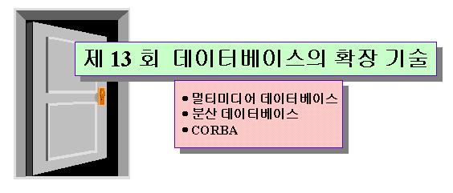

 |
||||||||||||||||||||||||||||
목 차
|
시작하기전에....본 강의에서는 데이터베이스와 관련한 최근의 기술인 멀티미디어 데이터베이스, 분산 데이터베이스, CORBA를 소개합니다. 여러분들은 다음 사항들을 유념하여 강의해 임해주길 바랍니다.
|
|||||||||||||||||||||||||||
1. 멀티미디어 데이터베이스(Multimedia Database)
멀티미디어 데이터란 이전의 문자, 숫자로 이루어진 데이터에 오디오, 비디오, 텍스트, 이미지등을 표현한 데이터이다. 멀티미디어 데이터 베이스의 특징은 데이터의 크기가 매우 크며, 그 저장방법이 다르기 때문에 내용 검색이 매우 어렵다는 점이다. 따라서 각 미디어 종류별로 내용검색과 조작을 수행하는 모듈을 DBMS에 추가되게 되었다. 또한 멀티미디어 문서와 하이퍼미디어 문서를 데이터베이스에 저장하려면 각각의 구성요소의 미디어와 그 구조도 데이터베이스에 저장하므로 데이터의 구조가 복잡하다. 그리고 각 미디어의 형태에 따라 여러 가지 방법의 저장방법과 출력방식이 사용된다. 멀티미디어 데이터베이스의 특징을 샆펴보면 다음과 같다.
1.1 멀티미디어 데이터베이스의 발전배경.초장기에는 멀티미디어 데이터를 파일에 저장하여 관리하는 처리 시스템을 사용하였다. 그러나 멀티미디어 데이터의 형식이 바뀌면 이 데이터를 사용하는 모든 응용 프로그램이 수정되어야 하며 멀티미디어 데이터에 관련된 소프트웨어들은 파일 구성 방법이나 접근 방법등에서 데이터와 프로그램간의 종속성이 존재하게 되고, 공유하지 못하는 데이터는 중복적으로 표현해야 하므로 멀티미디어의 공유가 어렵다. 또한 각 파일별로 멀티미디어 데이터간의 복잡하고 동적인 관계를 통합적으로 표현하기 어렵다. 따라서 멀티미디어 파일 시스템의 문제를 해결하는 방법으로 멀티미디어 데이터의 공유, 통합, 일관성 유지를 지원하는 관계 데이터베이스나 객체지향 데이터베이스를 확장하거나 완전히 새롭게 설계하는 형태로 구축되지만 종래의 정형 데이터를 저장하기 위해 만들어진 DBMS는 멀티미디어 데이터를 저장하기에 적합하지 않기 때문에 대안적 방법을 사용한다. 1.2 멀티미디어 데이터의 구성 요소멀티미디어 구성요소 데이터는 실제 데이터, 등록 데이터, 설명 데이터로 구성된다. 실제 데이터(raw data)는 문자의 집합, 이미지의 픽셀의 집합, 오디오의 샘플의 시이퀀스등 이제까지의 현재의 데이터로 간주했던 그 자체를 의미한다. 등록데이타(registration data)는 실제 데이터를 화면에 출력하거나 처리하기 위해 필요한 데이터, 예를 들어 화면 해상도, 픽셀당 비트수, 색표현 방식, 칼라 맵등을 예로 들 수 있다. 이 등록 데이터를 거쳐 실제 데이터를 처리한다. 설명데이타(description data)는 해당 미디어의 특징, 구조, 제목 등을 저장한 부분으로 정보 검색에 있어 패턴 인식을 우회할 수 있는 보조적 정보를 제공한다. 이미지의 경우, 주요 이미지 내용을 설명하는 문자 형태의 캡션이나 제목이 이에 해당한다. 각 미디어별 파일은 실제 데이터와 등록 데이터로 구성되어 있다. 등록 데이터가 헤더부분이 되고, 실제 데이터가 내용 부분이 된다. 이미지의 경우, 실제 모양을 화면에 보여주기 위해 헤더 부분에 있는 등록 데이터들을 이용하게 된다. 멀티미디어 DBMS에서 각 미디어에 해당하는 테이블이나 클래스에는 실제, 등록, 설명 데이터가 모두 포함되는 것이 바람직하다. 또는 실제 데이터와 등록 데이터는 파일에 저장된 채로 남겨두고 파일 이름과 설명 데이터만 데이터베이스내의 필드로 유지하는 방안도 가능하다. 1.3 멀티미디어 데이터 타입멀티미디어 데이터 타입은 멀티미디어 데이터를 위한 데이터와 연산자/함수등을 추가하는 형태로 개발되고 있다. 관계 데이터 모델의 경우 INT,CHAR형태의 정형 데이터 타입외에 TEXT, IMAGE, AUDIO데이타 타입과 이들을 조작하기 위한 연산(캡춰, 압축, 프리젠테이션)을 DBMS개발자가 추가적으로 정의·지원하고 있다. 객체 지향 모델의 경우 모델(또는 시스템)자체가 데이터 타입과 연산자/함수의 확장 기능을 가지고 있으므로 큰 문제없이 멀티미디어 데이터를 수용할 수 있다. 그러나 아직까지 멀티미디어 DBMS를 개발하는데 초기단계에 있다. 1.4 멀티미디어 데이터의 정의 방법멀티미디어 데이터는 다음의 세가지 방법을 이용하여 정의할 수 있다. 1. 시스템 정의 멀티미디어 데이터 타입을 이용하는 방법 시스템이 제공하는 타입으로 정의되며 사용자는 레이블로 정의하여 사용한다. 2. 사용자 정의 멀티미디어 데이터 타입을 이용하는 방법 사용자가 별도로 새로운 멀티미디어 데이터 타입을 정의하는 경우로 그 멀티미디어 데이터를 입·출력하는 방법도 사용자가 명세해야 한다. 1.5 멀티미디어 데이터 조작멀티미디어 데이터의 조작을 일반적인 데이터 베이스의 삽입, 삭제, 갱신, 생성 이외에 멀티미디어의 특성에 따른 조작 연산이 필요하다. 멀티미디어 특성에 따른 조작 연산이란 예를 들어 동영상의 경우 재생, 되감기, 빠른 재생, 정지 등을 들 수 있다. 1.6 멀티미디어 데이터의 저장구조멀티미디어 데이터의 저장구조는 복잡하고 대용량이며 다양한 타입으로 복합적 구성을 갖는다. 따라서 튜플의 크기가 물리적 디스크의 한 페이지를 초과하는 경우가 많으며 1차원 배열로 볼 수 있는 물리적 디스크 형태와 상위 레벨의 2차원적인 표현 형태 사이의 변환과정이 요구된다. 현재 멀티미디어 데이터의 저장 방식을 설명하면 다음과 같다.
아직까지 멀티미디어 데이터베이스의 연구는 시작단계에 있고 많은 시간과 노력이 필요하다. 현재의 추세는 일부 미디어, 일부 장치, 일부 관계성, 일부 도구 만을 지원하는 초기 멀티미디어 데이터 베이스 시스템의 개발이 진행되는 정도이다. 1.7 멀티미디어의 내용 검색멀티미디어 데이터베이스는 완전히 일치하는 데이터를 찾기가 어렵기 때문에 부분적으로 일치하는 데이타를 찾게된다. 멀티미디어 데이터 탐색은 서로다른 여러 구조로 여러 구조간의 관계를 잘 표현하면 유용한 정보검색이 가능하며 멀티미디어 데이터의 특징을 기술하는 문자열 형태의 설명 속성(descriptive attribute)을 사용하여 멀티미디어 데이터의 내용을 검색 할 수 있다. 내용검색이란 데이터의 물리적 주소가 아닌 데이터의 값을 이용해 원하는 정보를 검색하는 것을 의미한다. 텍스트 데이터의 경우 정보 검색에서 사용하는 역리스트나 시그니춰(signature)기법을 이용하여 특정 키워드를 포함한 텍스트를 검색할 수 있다. 역 리스트 방식은 정확한 텍스트만을 검색해 오지만 인덱스가 차지하는 기억공간의 오버헤드가 크다는 문제가 있다. 시그니춰 방식은 인덱스가 차지하는 기억공간의 오버헤드는 작지만 부정확한 텍스트를 검색해 오는 문제가 있다. 질의 유형으로는 키워드를 AND, OR등의 논리 연산자로 연결하는 불리언 질의와 키워드 리스트 형태의 주어진 질의와 가장 가까운 문서들에 순위를 부여하여 제시하는 순위 질의가 주로 사용된다. 이미지 데이터의 경우 이미지 분석기술이나 칼라 스펙트럼을 이용한 방식이 사용되고 있다. 벡터 그래픽 데이터의 경우 그래픽을 구성하는 벡터 요소들을 분리 저장하고 특정 요소간의 거리, 특정 요소간의 포함여부, 특정 요소간의 겹침여부등을 묻는 질의가 지원되고 있다. 오디오의 경우 음성인식 기술의 지원이 필요하며 비디오도 영상 인식 기술 지원이 요구된다. 멀티미디어 데이터의 내용 자체를 패턴 인식 기술을 이용해 분석하는 기법보다는 각 미디어 데이터에 텍스트나 자연어 형태로 된 설명문, 즉 캡션을 부착해 이 설명문을 검색하는 방식이 많이 사용되고 있다. 멀티미디어 데이터의 내용 검색은 그 처리 기술도 어렵지만, 처리 시간도 큰 문제가 된다. 1.8 멀티미디어 데이터 언어SQL은 관계형 데이터베이스의 표준 데이터 언어로 자리잡은 것은 물론 이고 객체 지향 데이터베이스에서도 SQL형태의 언어가 사용될 전망이다. 특히 SQL-3은 데이터베이스 기술을 지원하기 위한 데이터 언어이다. 주요 데이터 타입은 numeric, data, time, timestamp, interval, boolean, enumeration 등이 있다. 현재의 멀티미디어 데이터베이스 구축은 멀티미디어 구성 요소를 캡춰해 디지털화 한후 파일, BLOB, 또는 해당 클래스의 객체로 표현해 하드 디스크나 광 디스크에 저장하는 방법과 데이터베이스에는 캡션 정보만을 추가적으로 저장해 두고 이 캡션을 이용해 목표 멀티미디어 구성요소를 검색하는 방법을 이용한다. 1.9 멀티미디어 데이터베이스 시스템 구현의 문제점멀티미디어 데이터베이스 구현에서 부딪히고 있는 문제점들은 다음과 같다.
따라서 멀티미디어 데이터베이스에 대한 이상적인 방향은 우선 모든 모노미디어 데이터가 클래스 내부로 캡춰되어야 하며 각 클래스는 완전한 검색/조작 함수를 제공하여야 한다. 또한 멀티미디어 DBMS 자체에서 멀티미디어/하이퍼미디어의 구조 표현 및 구성을 직접 지원해야 하고 저작 기능 및 CD 타이틀 제작 기능을 직접 제공하여야 하며 멀티미디어 응용 개발 도구를 직접 지원하여야 한다. 2. 분산 데이터베이스
2.1.분산 데이터베이스 시스템의 장점분산처리시스템은 시스템 안에 있는 파일, 처리 능력, 하드웨어 등의 자원을 통신망을 매체로 공유하도록 지원하며, 부하 분담(load sharing)을 통하여 연산을 분산 처리하므로 속도의 향상과 시스템의 효율적 이용을 기대할 수 있다. 또한 장치의 자율적 설치(autonomous installation)와 자료의 중복 저장에 의한 시스템 전체의 신뢰성(reliability)향상과 통신망을 이용한 다양한 정보교환 서비스를 제공받을 수 있다. 즉, .분산데이타베이스 시스템이 필요로 하는 자료가 컴퓨터 통신망내에 서로 다른 컴퓨터(사이트)에 분산되어 있는 시스템으로, 컴퓨터통신망 안에 있는 각 사이트는 지역적 자료를 이용한 작업을 자치적으로 수행할 능력이 있으며, 통신망을 통해 다른 여러 사이트에 저장된 자료를 액세스하는 전역 작업의 일부분에 참여하는 시스템이다. 분산 데이터베이스를 중앙 집중식 데이터베이스와 비교할 때 다음과 같은 장점을 갖는다.
분산 시스템은 자원 공유, 연산 속도 향상, 통신 서비스를 위한 프로세스의 이동 비용, 통신 비용이 소요되며, 신뢰성 향상을 위한 운영체제 및 시스템 유지 비용 등이 매우 높아지는 단점도 있다. 분산형 데이터베이스의 필요성은 다음과 같다.
2.2 분산 테이타베이스 관리 시스템의 기능사용자가 작성한 응용 프로그램을 통한 원거리 데이터베이스액세스 기능은 분산 시스템의 가장 기본적인 기능이며, 분산 시스템만이 아닌 일반적인 통신 지원 시스템에서 제공하는 기본적 기능이다. 분산된 데이터의 투명성 제공 기능은 분산 시스템의 핵심 기능이며 시스템의 성능을 좌우하는 중요한 척도가 된다. 현재 상용화된 시스템들마다 지원하는 투명성은 모두 그 정도의 차이가 있으며 아직 완전한 투명성을 지원하는 시스템은 상용화 되어 있지 않다. 사용자에게 많은 투명성을 제공할수록 시스템의 관리 편의성은 증가하지만 성능은 감소하는 경향이 있으므로 상용화 데이터베이스 회사에서는 자신의 시스템에 맞는 적절한 수준으로 자료의 투명성을 지원한다. 분산 투명성을 이용하여 분산된 데이터베이스를 운영하는 도구(tool)를 제공한다. 사용자는 이 도구를 이용하여 분산된 자료를 보안이 허용하는 범위에서 마치 자신의 사이트에 있는 자료처럼 자유롭게 액세스할 수 있으며 시스템의 성능을 추적, 평가할 수 있다. 분산된 데이터베이스에서 처리되는 트랜잭션에 대한 일관성 유지, 복구, 동시성 제어 등의 기능을 제공한다. 이 기능은 데이터베이스 관리를 위한 필수적인 기능이지만 분산 시스템에서는 많은 문제를 유발하는 부분이다. 분산 데이터베이스 관리 시스템을 구별하는 중요한 성질 중 하나가 동질형(homogeneous) 분산 시스템과 이질형(heterogeneous) 분산시스템이다. 이질형과 동질형의 구별은 시스템 안에서 사용되는 DBMS들이 동일한가 아닌가에 따라 이루어진다. 상용화된 대부분의 시스템은 동질형 분산 시스템이며 이질형 분산 시스템은 각기 다른 데이터베이스 관리 시스템간의 자료 교환의 문제가 존재한다. 2.3 분산 데이터베이스 관리 시스템의 구조분산DBMS는 기존 지역 데이터베이스 관리 시스템의 상위 위치에서 동작하여, 사용자와 지역 데이터베이스 관리 시스템 사이에서 지역 데이터베이스에 없는 광역 자료에 관한 원거리 검색, 갱신을 수행한다. RAD는 원격 데이터베이스 접근(remote database access)으로 지역 데이터베이스에 저장되어 있지 않은 자료에 액세스할 때 사용된다. 각 사이트는 지역 데이터베이스와 관리시스템을 보유하고 있으며 그 위에 분산시스템의 기능을 제공하기 위하여 전역 트랜잭션 관리기(Global Transaction Manager)와 전역 질의 처리기(Global Query Processor)를 두고 있다. 전역 트랜잭션 관리기는 각 지역 데이터베이스 관리 시스템에 있는 거래 관리기와 협력하여 시스템 내의 데이터베이스가 상호 일관성을 유지하고 트랜잭션의 원자성을 유지하도록 관리하는 역할을 한다. 전역 질의 처리기는 사용자 질의를 해결하기 위하여 액세스할 자료의 위치를 파악하고 질의를 수용할 방법을 수립한다. 자료 사전을 관리하는 분산관리 프로세스와 사용자가 제기하는 질의와 응용 프로그램을 수행하는 사용자 응용 프로세스로 구성된다. 전역 거래 관리기는 지역 실행 관리기와 협력하여 분산 환경에서 트랜잭션이 원활히 수행되도록 관리한다. 광역/지역 모델 변환기는 광역 데이터베이스와 지역 데이터베이스 간의 질의와 데이터 모형을 바꿔주어 일관된 지역 데이터베이스 액세스 방법을 지원한다. 2.4 분산 투명성과 자료분할분산 데이터베이스 계층 참조 구조분산 데이터베이스는 사용자가 분산된 자료에 접근하거나 시스템이 자료의 분산 투명성을 관리하기 위해서는 특수한 자료 관리 구조가 필요하다. 분산 시스템에서는 이러한 기능을 위하여 계층 참조 구조(layered reference architecture)를 정의한다.
각 상위 스키마를 하위 스키마들로 분할할 때의 조건은 다음과 같다.
분산 데이터베이스 투명성의 단계 투명성의 단계가 높아지면 사용자를 자료 분산에 무관하게 작업을 할 수 있으나 시스템이 분산 자료를 유지하기가 힘들며 사용자는 자료 분산에 의존하여 작업을 하여야 하므로 번거로운 점이 있으나 시스템이 분산 자료를 유지하기 간편하며 시스템이 발생시키는 부하가 적어진다. 분할 투명성(fragmentation transparency)은 사용자 입장에서 가장 바람직한 은폐성의 단계로 질의나 응용 프로그램에게 분할 스키마에 대한 독립성을 지원한다. 또한 할당이나 지역사상스키마에 대한 독립성도 보장 받는다. 그러므로 분할스키마이하의 스키마 변경에 대하여 영향받지 않게 된다. 위치 투명성(location transparency)은 분할 투명성보다 한 단계 낮은 투명성으로 사용자에게 할당스키마에 대한 독립성을 지원한다. 그러므로 할당과 지역 사상스키마에 대해서만 독립성이 있으며 할당 스키마 이하에 변경에 대하여 영향 받지 않는다. 위치 투명성을 통하여 시스템은 사용자와 무관하게 사본을 생성, 이동, 삭제할수 있으며 사용자가 분할 정보를 이용하여 응용 프로그램을 효율적으로 작성할 수 있다. 또한 시스템에게 갱신 연산과 관련된 사본의 관리 문제를 맡길 수 있도록 한다. 지역 사상 투명성은 사용자가 접근할 시스템에서 사용되는 데이터베이스의 접근 방법을 알지 못하더라도과 자료를 사용할 수 있도록 하는 기능을 제공한다. 즉 사이트간에 서로 상이한 지역 데이터베이스와 데이터모델을 사용하더라도 접근할 객체의 이름과 접근에 필요한 연산을 일관된 방법으로 지정할 수 있다. 2.5 분산 데이터베이스의 설계분산 데이터베이스의 설계 내용분산데이터베이스를 설계하기 위해서는 중앙 집중형 데이터베이스를 설계할 때 고려되는 문제를 고려하여 같은 기법을 사용하여 해결할 수 있다. 분할 스키마 설계에서 전역 릴레이션은 중앙 집중형 데이터베이스 스키마설계기법을 이용하여 설계할 수 있다. 이렇게 설계된 전역 릴레이션은 분할로 나누기 위하여 수직, 수평 분할을 정의하는 분할스키마를 설계하여야 한다. 할당 스키마 설계는 분할스키마 설계에서 생성된 분할들은 각 사이트에 저장되는 이미지로 할당하는 할당 스키마를 설계하여야 한다. 분산 데이터베이스의 설계 접근 방법분산 데이터베이스의 설계 접근 방법은 하향식(top-down) 설계 접근 방법과 상향식(bottom-up) 접근 방법으로 분류된다. 하향식 설계 방법은 은 시스템의 설계가 상위계층에서 하위계층으로 내려가는 설계 방식으로 전체 시스템을 처음부터 분산 시스템으로 설계할 때 주로 이용된다. 전역 스키마를 설계하고 이후 분할스키마, 할당스키마를 순서대로 설계하여 각 사이트에 배치될 이미지를 결정한다. 상향식 설계 방법은시스템의 설계를 하위계층에서 상위계층으로 올라가면서 설계하는 방식으로 기존의 데이터베이스 시스템을 통합하여 운영하고자 할 때 이용된다. 분할(fragmentation allocation)의 할당은 다음 방법에 의하여 결정한다.
데이터 공유 방식에 따른 분산 데이터베이스 시스템의 분류데이터 공유 방식에 따라 분산 데이터베이스 시스템을 분류하면 다음과 같다. 1) 전역 스키마 다중 데이터베이스 시스템(global schema multidatabase system) : 분산 시스템에 연계된 모든 지역 시스템의 지역 스키마를 통합하여 하나의 전역 스키마를 관리한다. 전 지역에 관한 스키마 정보를 시스템이 가지고 있으므로 각 사용자는 전역 데이터베이스에 액세스요청을 할 때 지역 정보, 중복도, 시스템 간의 이질성 등에 대하여 전혀 고려할 필요가 없다. 이 시스템은 자료의 공유도가 높은 응용에 적합하다. 2) 연합 데이터베이스 시스템(federated database system) : 전역 스키마 대신 각 사이트에서 공유를 원하는 원거리 자료에 관하여 수출입 스키마(export-import schema)를 두어 채널 형태로 전역 자료를 관리한다. 수출 스키마는 다른 사이트가 자신 사이트에 액세스하고자 하는 항목에 관하여 지정하고 있으며 수입 스키마는 자신 사이트가 다른 사이트에 액세스하고자 하는 항목에 관하여 지정하고 있다. 3) 다중 데이터베이스 언어 시스템(multidatabase language system) : 이 시스템은 따로 설계된 전역 스키마를 기준으로 원거리 액세스를 지원하는 대신 전역 데이터베이스 언어 단계에서 원격 액세스를 지원한다. 분산 시스템은 각 사이트에 스키마들에 대한 유일한 이름부여(naming) 지정된 이름과 사용자 지정 이름 간의 대응, 각 사이트 간의 데이터 모델의 변환기능등만을 수행한다. 4) 상호운영시스템(interoperable system) : 이 시스템은 규정된 통신 시스템에 지원을 받아 각 사이트의 응용 프로그램 단계에서 자료를 교환하는 시스템으로 구체적인 분산 시스템이 존재하지 않은 형태이다. 주로 데이터베이스 시스템에 적용되기 보다는 파일 공유 시스템이나 캐드 시스템등에 응용된다. 이질형 분산데이타베이스 관리 시스템의 문제점이질형 분산 데이터베이스 시스템은 분산된 시스템들간에 존재하는 여러 가지 이질적 요소들에 의해 분산 데이터베이스의 통합관리가 어렵게된다. 각 이질적 요소와 이 요소에서 발생되는 분제점들을 설명하면 다음과 같다. 데이타 모델의 이질성 이질형 분산 데이터베이스 시스템에서는 지역의 자치성을 제공하기 위하여 각 지역 시스템에서 사용되던 데이터 모델을 그대로 유지하면서 사이트 간의 자료 교환을 제공해야 한다. 그러기 위해서는 각 사이트에서 정의하고 있는 데이터 스카마 구조를 다른 사이트에서 사용할 수 있도록 변환할 수 있는 기능을 제공하여야 한다. 보통은 기존 데이터 모델의 표현 능력은 모두 포함할 수 있는 공통 데이터 모델을 설계하여 이 모델을 기준으로 모델을 변환하는 방식을 사용하고 있다. 데이타베이스 언어의 이질성 한 사이트에서 명령한 조작 언어의 결과를 제공할 사이트에서는 그 사이트에 맞는 형태로 조작 언어를 변환하여야 한다. 이질형 분산 시스템에서는 데이터 모델의 이질성을 해결하는 방법과 비슷한 형태로 공통의 데이터 조작언어를 정하여 문제를 해결한다. 트랜잭션 관리법의 이형성 트랜잭션는 자료 처리의 원자성과 동시성 제어, 복구을 위하여 제공되는 모델이다. 각 지역 시스템에서는 각 지역 시스템에서는 각기 다른 형태의 트랜잭션 관리기법을 사용할 수 있으므로 이질형 분산 시스템에서는 서로 다른 트랜잭션 관리 기법의 자치성을 보장하면서 전역 연산의 수행을 관리하여야 한다. 전역 보안 분산 시스템의 자료 접근에 관한 액세스 제어는 전역보안 정책과 각 지역 사이트의 보안 정책에 의존한다. 각 이질형 시스템들이 나누고 있는 보안의 단계와 보안의 절차들이 다르므로 상호간의 액세스를 제어하는데 많은 중재를 하여야 한다. 2.6 클라이언트/서버 데이터베이스 시스템클라이언트/서버 데이터베이스 시스템은 분산 데이터베이스 시스템의 일종이며 이 내용에대해서는 이미 제 12 회 강의에서 다루었으므로 생략하도록 한다.
3. CORBA
3.1 CORBA 출현배경사용자들은 생산성있는 응용 프로그램을 원할 뿐만 아니라 파일이나 데이터베이스처럼 다양한 데이터 저장공간으로부터 정보를 얻길 원한다. 뿐만 아니라 다른 사용자과 자료를 공유하고 상호 통신을 필요로 한다. 이와 같이 다양한 요구사항을 만족시키는 프로그램을 작성하기 위해서는 서로 다른 운영체제와 네트웍 환경 등 이종의 환경하에서 작동가능한 클라이언트/서버 소프트웨어를 개발해야 할 뿐만 아니라 개발된 소프트웨어는 분산환경에서 서로 다른 시스템과도 쉽게 통합할 수 있어야 한다. 그러나 이러한 요구사항을 만족시키는 소프트웨어를 작성하기란 결코 쉽지 않다. 특히, 이종의 분산 환경에서 여러 종류의 응용 프로그램을 통합하기 위한 결합 방식을 필요로 한다. 이러한 문제를 해결하는 고급 방법으로 기존의 RPC(Remote Procedure Call) 방식이나 마이크로소프트의 OLE(Object Linking and Embedding)과 같은 방식을 사용해 왔다. 그러나 RPC이 경우 기존의 구조적 패러다임을 기반으로 하기 때문에 아주 복잡하고 규모가 큰 프로그램을 작성하는데 있어 많은 한계가 있다. 또한 OLE의 경우에도 윈도우 객체들만의 호환을 지원하기 때문에 진정한 분산 시스템 표준이라고 말하기 어렵다. 그러나 이러한 문제들을 해결할 수 있는 방식으로 대두된 것이 OMG(Object Management Group)에서 제정한 CORBA(Common Object Request Broker Architecture)표준안이다. 3.2 CORBA 클라이언트의 서비스 요청 과정CORBA 클라이언트는 구현 객체에 서비스 요청을 담당한다. CORBA 클라이언트는 정적인 호출 방법인 스터브를 사용하거나 동적 호출 인터페이스를 이용할 수 있다. 또한 ORB에서 제공하는 기능을 직접 이용하기도 한다. 클라이언트 스터브는 정적 호출이라고도 하는데 그 이유는 메소드 호출이 컴파일시 스터브에 의해서 미리 결정되기 때문이다. 동적 호출이란 실행중에 원하는 메소드를 동적으로 호출할 수 있는 기능을 말한다. 이를 위해 CORBA 는 인터페이스 저장소라는 데이터베이스에 해당 클래스의 모든 인터페이스를 저장해 두고 동적 호출시 이를 참조하여 해당 메소드를 수행한다. 동적 호출 과정을 살펴보면 다음과 같다.
3.3 클라이언트 객체의 구동과정
CORBA 클라이언트 갣체를 구동하는 과정은 그림 13-1과 같고 좀 더 자세히 단계적으로 설명하면 다음과 같다. 1단계 : 클라이언트 객체를 하나 생성하고 해당 객체의 이름을 얻어 온다. 2단계 : string_to_object()을 사용하여 문자열 형태의 이름을 실제 객체 참조자로 바꾼다. 3단계 : 정적 호출이나 동적 호출 방법을 사용하여 해당 객체의 메소드를 호출한다. 4단계 : 예외 상황을 검사하고 5단계 : 이상이 없으면 해당 결과를 활용한 후, 6단계 : 마지막 ORBFree()를 사용하여 클라이언트와 ORB사이의 연결을 종료한다. 3.4 CORBA 구현 객체 부분 및 구동 과정
구현 객체는 스켈로턴을 통해 클라이언트의 서비스 요청을 처리한다. CORBA구현 부분은 이 기능을 수행하기 위해 구현 스켈로턴, 객체 아답터, ORB 인터페이스로 구성되어 있다. 구현 스켈로턴(Implementation Skeleton)구현 스켈로턴은 클라이언트의 서비스 요청에 대한 구현 객체를 직접 호출하는 역할을 한다. 이때 서비스 요청이 제공되는 정보를 해석하고 이를 통해 구현 객체에 전달하며 처리된 결과를 포장하여 네트웍을 통해 클라이언트에게 전달한다. 객체 아답터(Object Adapter)객체 아답터는 CORBA를 적용하려는 분야에 따라 다양하게 선택되어 사용될 수 있다. 가령, 데이터베이스가 필요하다면 데이터베이스 아답터를 사용할 수도 있다. 객체 아답터의 역할을 단계별로 살펴보면 다음과 같다. 단계 1 : 먼저, 구현 객체를 구현 저장소에 등록한다. 단계 2 : 프로그램 수행 중에 새로운 구현 객체의 인스턴스를 생성한다.새롭게 생성된 구현 객체에 유일한 객체 식별자를 부여하고 이를 중복되지 않게 관리한다. 단계 3 : ORB에게 새로운 구현 객체가 생성되었음을 알린다. 단계 4 : ORB를 통해 전달된 클라이언트 객체의 서비스 요청을 받고 이를 스켈로턴을 통해 구현 객체에게 전달(Up-call)하며 적합한 메소드를 호출한다. 이 때, 스켈로턴은 전달된 파라메터를 적절하게 해석해준다. 객체 아답터은 해당 구현 객체를 호출하기 위해 구현 저장소(Implementation Repository)를 참조한다. 따라서 참조하기 전에 모든 구현 객체에 대한 정보는 미리 저장되어 있어야 한다. 저장되는 정보로는 구현 객체의 물리적인 위치, 이름, 활성화 정책, 사용 프로토콜 등 다양하다. 이 중에서 활성화 정보는 객체 아답터가 구현 객체를 활성화시킬 때 이용된다. 일반적으로 기본 객체 아답터(BOA : Basic Object Adapter)에서 구현 객체를 활성화시키는 정책들은 다음의 4 가지가 있다.
실제 어떤 정책을 사용할 것인가에 따라 성능상의 영향을 받기 때문에 시스템의 상황에 적합한 정책을 결정해야 한다. 일반적인 상황에서 어떤 방법이 가장 좋다고 결정하기는 어렵다. ORB 인터페이스클라이언트 부분에서 처럼 통신 기능과 메소드 호출 등 ORB의 기본 기능을 제공한다. 구현 객체의 구동 과정
구현 객체의 구동 과정은 그림 13-3과 같고 자세히 설명하면 다음과 같다. 단계.1 : ORB는 클라이언트 객체의 서비스 호출 요청을 받고 구현 저장소를 참조한 후 구현 객체의 활성여부를 검사한다. 단계.2 : 구현 객체가 활성중이지 않을 경우 활성화(Activate)시킨다. 이 때, 구현 객체에게는 BOA와 통신하는데 필요한 정보를 전달받는다. 단계.3 : 구현 객체는 impl_is_ready 메소드를 호출하여 BOA에게 자신의 존재를 등록한다. 단계.4 : BOA는 단계3에서 등록된 구현 객체를 활성화시킨다. 단계.5 : BOA는 스켈로턴을 통해 클라이언트가 요청한 메소드를 호출한다. 단계.6 : 구현 객체에 대한 모든 이용이 끝나면 BOA에서 제공하는 deactivate_impl 메소드를 호출하여 구현 객체를 비활성화시킨다. 3.5 CORBA의 여러 가지 구성 방법CORBA는 클라이언트와 구현 객체, 그리고 ORB의 배치에 따라 여러 구성 방법을 갖는다. 일반적으로 크게 3가지 방법이 존재한다. 1. 단일 프로세스 라이브러리 형태(Single-Process Library Resident) 단일 프로세스 내부에서 라이브러리를 통해 클라이언트와 구현 객체 사이의 서비스가 진행되는 방법이다. 이 방법은 분산된 환경에 적합하지 않다. 2. 클라이언트와 구현 객체 라이브러리 형태(Client & Implementation Resident) 또 하나의 방법은 분산 객체 시스템에서 제공하는 기능이 클라이언트용 라이브러리와 구현 객체용 라이브러리 형태로 존재하고 이를 이용하여 분산된 환경에서 응용 프로그램을 작성한다. 작성된 프로그램은 별도의 프로세스로 존재한다. 3. 서버 또는 운영체제 형태(Server or Operating-system Based) 마지막으로 기존의 운영체제에 분산 객체 기능을 추가하거나 별도의 분산 객체 daemon 프로그램이 존재하여 클라이언트와 분산 객체사이의 서비스를 주관하는 방법이 있다. CORBA는 객체지향기술을 기반으로 하여 서로 다른 운영체제와 네트워크 환경, 이종의 데이터 모텔, 데이터 타입, 구현 언어등 특정 환경에 종속되지 않고 시스템을 구축할 수 있게 해준다. CORBA 서비스란? CORBA 서비스는 금융이나 통신 등 특정 분야에 국한되지 않고 광범위하게 CORBA 객체를 조작하는데 필요한 모든 서비스들을 지원하기 위한 인터페이스 명세이다. CORBA 서비스는 OMA의 하단부에 위치한다. 위치가 상징하듯이 CORBA 응용 프로그램들은 이 기능들을 이용하여 원하는 작업을 수행한다. CORBA 서비스는 계속해서 진행되고 있는 CORBA 표준이다. 따라서 필요에 따라 추가될 수 있다. CORBA 서비스는 1993년 COSS1(Common Object Service Specification 1) 명세부터 1996년 COSS5까지 계속해서 진행되고 있다. 각 CORBA 서비스의 종류와 내용은 다음의 표와같다.
COSS1의 종류와 내용 생명 주기 서비스(Life Cycle Service) 모든 객체는 초기 생성에서부터 소멸되는 시점까지 일련의 생명주기를 갖는다. 또한 한 객체를 복사, 삭제 하는 등 다양한 조작 기능을 갖는다. 이러한 서비스를 제공하는 기능이 생명 주기 서비스이다. 생명 주기 서비스를 위해 CORBA는 FactoryFinder, GenericFactory, LifeCycleObject. 등의 3개의 인터페이스를 제공한다. 이벤트 서비스(Event Service) 복잡한 시스템을 디자인할 경우, 특정 객체에서 이벤트를 전달하여 새로운 서비스를 요구하거나 수행시키기 위한 서비스가 필요하다. 이러한 기능을 제공하는 것이 이벤트 서비스이다. CORBA 이벤트 서비스는 멀티캐스트 기능을 제공한다. 다시 말해, 복수 이벤트 제공자들과 수용자들을 지원한다는 것이다. 이러한 기능들을 위해 CORBA 이벤트 서비스는 객체간의 상호작용을 위해 두가지 스타일의 이벤트 모델을 제공한다. 명명 서비스(Naming Service) 사용자들은 CORBA 객체를 이용할 때 문자열 형태의 객체 이름을 사용한다. 그러나 실제 CORBA 객체를 조작하기 위해서는 사람을 유일하게 식별해주는 주민등록번호같이 객체에게 유일한 이름인 객체 참조자를 이용해야만 한다. 그러나 객체 참조자는 문자열 이름처럼 쉽게 이용할 수 있는 것이 아니다. 매핑시켜 주는 서비스를 제공한다. 이러한 서비스가 명명서비스이다. 명명서비스는 디렉토리 구조의 명명 규칙을 지원한다. 지속성 객체 서비스(Persistent Object Service) 파일이나 데이터베이스에 자료를 저장하지 않는 한 프로그램 중에 생성된 모든 객체는 프로그램의 종료와 더불어 정보를 잃어버리고 마는 일시성 객체이다. 따라서 지속적으로 정보를 저장하고 싶은 경우 일시성 객체와 달리 원하는 정보를 지속적으로 저장gk는 객체를 생성해야 한다. 이러한 객체를 지속성 객체(PO, Persistent Object)라 하며 CORBA 지속성 객체 서비스는 이러한 지속성 객체를 생성해 준다. 클라이언트에게 제공되는 지속성 객체는 지속성 프로토콜을 통해 지속성 데이터 서비스를 이용하여 데이터스토어에 정보를 저장한다. 데이터 스토어는 객체지향 데이터베이스나 관계형 데이터베이스 또는 파일 시스템이 될 수 있다. 지속성 데이터 서비스는 각 데이터스토어 특성에 맞게 지속성 객체를 조작하는 기능을 담당한다. 외형화 서비스( Externalization Service) 일반적으로 데이터를 이동시킬 경우 스트림이라는 기술을 사용한다. 예를 들면 유닉스나 도스상에서 파이프 라인 같은 명령어를 사용하여 두 개의 명령어를 결합하면 앞의 명령어를 수행한 결과를 뒤의 명령어가 연속적으로 받아서 이용할 수 있다. 이런 것처럼 데이터를 스트림이라는 연속화된 개념으로 추상화하고 이것을 네트워크나 프로세스에 상관없이 이동시킬 수 있다. 이처럼 객체의 외형화란 일련의 객체를 스트림 형태로 처리하여 파일이나 데이터베이스처럼 다른 형태의 객체로 바꾸는 것을 객체 외형화 서비스라고 한다. 객체 관계 서비스(Relationship Service) 실세계의 모든 사람들이 부모나 형제, 친구처럼 다른 사람들과 일정한 관계를 갖는 것처럼 객체들 간에도 일정한 관계가 발생한다. 객체 트랜잭션 서비스(OTS, Object Transaction Service) 트랜잭션은 더 이상 나누어 지지않는 하나의 작업 단위이다. 가령 특정 값을 읽거나 갱신하는 것 등은 하나의 작업 단위이다. 이러한 트랜잭션은 ACID 특성(원자성, 일관성, 고립성, 영구성)을 만족해야 한다.
동시성 제어 서비스(Concurrency Control Service) 도서관에 있는 정보들은 한 명이 독점할 수 있는 것이 아니라 여러 사람에 의해서 공유되는 것이다. 만약, 한 명이 이 정보를 독점한다면 다른 사람들은 이를 이용할 수 없다. 또한 다른 사람이 이용하는 중간에 해당 정보에 변경을 가한다면 기대치 않은 부정확한 정보를 얻을 수 있다. 마찬가지로 CORBA 응용 시스템에서 하나 또는 그 이상의 객체들이 동시에 특정 자원을 이용할 필요가 있을 경우, 한 객체에 의해서 독점되지 않도록 이를 제어해야 한다. 또한 다른 객체들이 자원을 이용하고 있을 때 이 객체에 변경을 가하지 못하도록 해야 한다. 이러한 기능이 동시성 제어 서비스이다. 일반적으로 동시성 제어 서비스는 앞서 설명한 트랜잭션 서비스와 맞물려 언급되거나 사용된다. |
||||||||||||||||||||||||||||